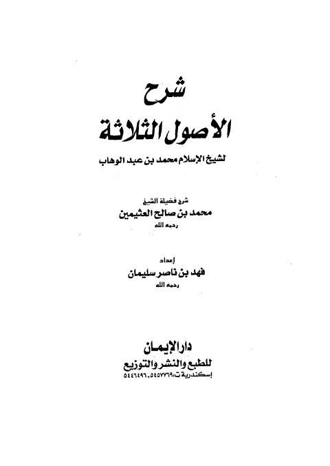

Downloads need an internet connection.
شرح الأصول الثلاثة- العثيمين
Authors: محمد بن صالح العثيمين
Editors: فهد بن ناصر سليمان
Publishers: دار الإيمان
**▫️ العنوان: شرح الأصول الثلاثة- العثيمين** ▪️ المؤلف: #محمد_بن_صالح_العثيمين ▫️ المحقق: #فهد_بن_ناصر_سليمان ▪️ الناشر: #دار_الإيمان_للطبع_والنشر_والتوزيع ▫️ تاريخ النشر: 1421هـ 2001م ▪️ بلد النشر: الإسكندرية، #مصر ▫️ الطبعة: 1 ▪️ عدد الأجزاء: 1 ▫️ الصفحات: 168 ▪️ نوع الوعاء: #كتاب ▫️ التصنيف الرئيسي: #العقيدة_والمذاهب_والأديان ▪️ التصنيف الفرعي: #أصول_الدين ۪